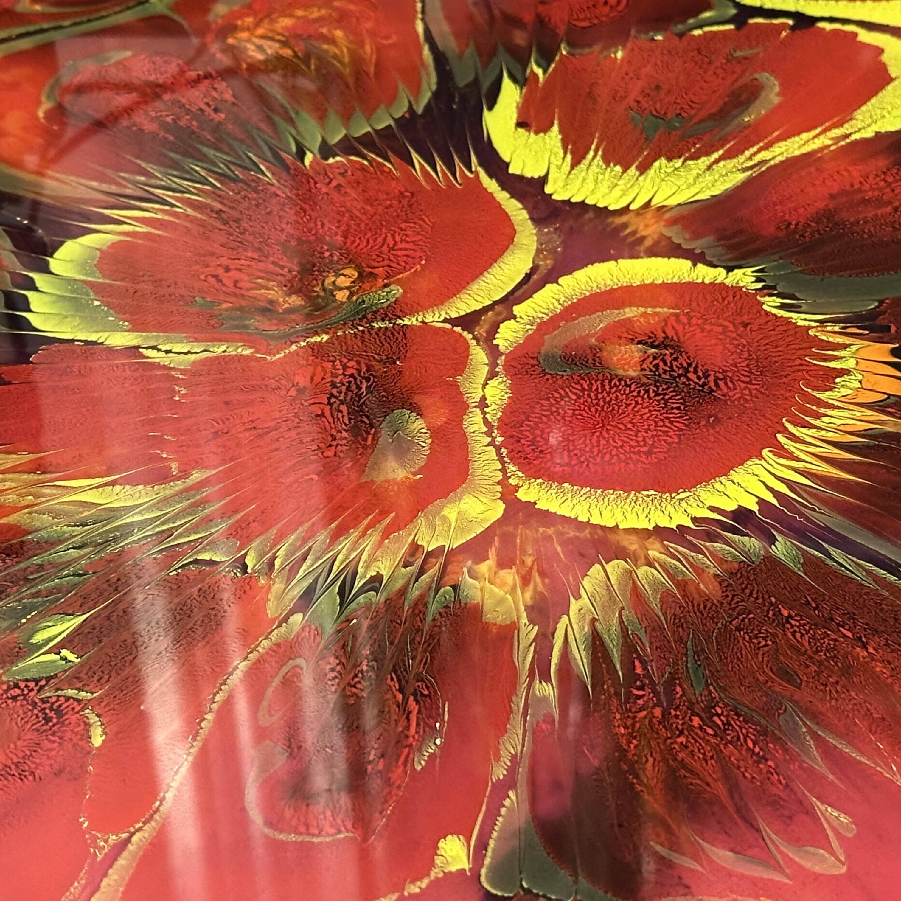
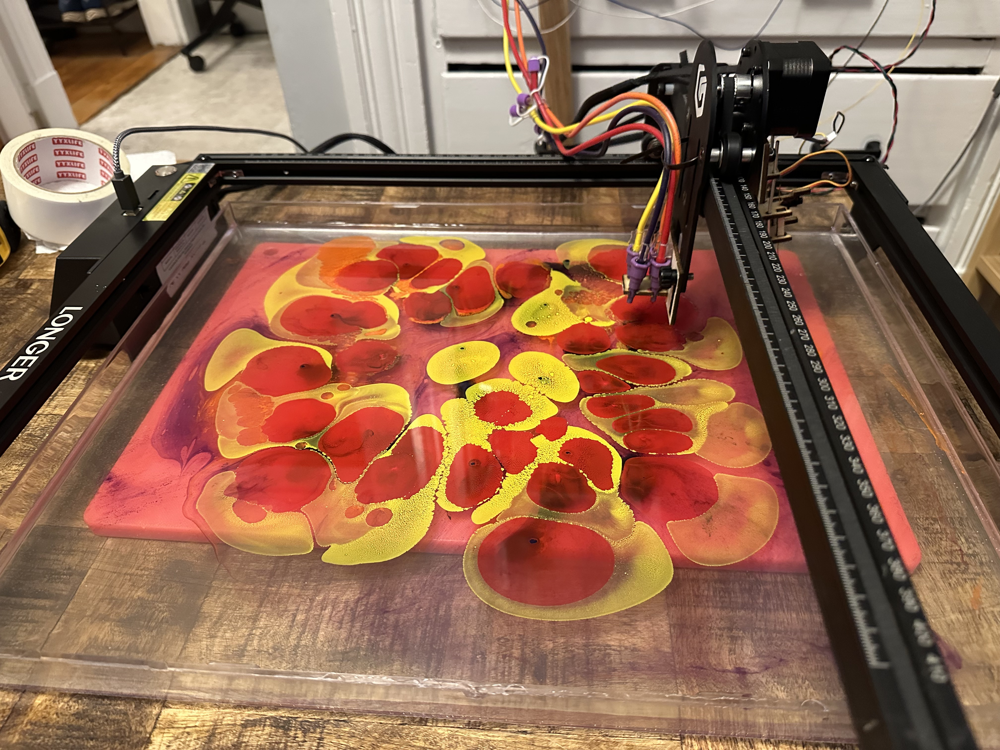

<div class="textcontainer">
<br>
<br>
<h3>Week 1: Final Project Proposal</h3>
<p class = "margin"></p>


<img src="./resultMarbled.jpeg" style="width:300px">
<p class = "margin"></p>
<h4>Paper Marbling Machine</h4>
<p class = "margin"></p>
I began this project at the beginning of last semester. I worked with David Selles who is in my same program and we were able to produce a fully functional prototype by hacking a laser cutter to work as an XY Gantry. We then attached several bags of ink to the head of the laser cutter along with a stick that can be used to create interference patterns in the ink. <br>
This semester, I would like to continue to build on this project through this class by replacing the hacked laser cutter with a coreXY system as well as improve the flow and control of the inks. <br>
Further, I would like to look into certain algorithms which can take in any digital image and convert it into a field of vectors which represents the image not through edge detection but through the alignment and misalignment of adjacent vectors.<br>
I am continuing to work with David Selles with additional advising from Quentin Bolsee.<br><br>
<a href="https://docs.google.com/presentation/d/1fyAHUq4qZh3FGobz8YyTWJbzOb6FPerKJKDAUFTkS1k/edit?usp=sharing">Link to presentation</a> | <a href="https://youtu.be/8Up5kAhq0gQ?si=apDRbPGyDtwcYJvU">Video Demo
<p class = "margin"></p>
</div>